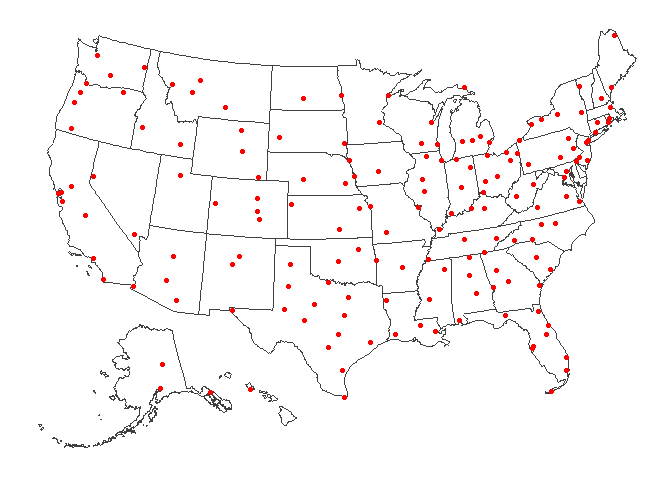
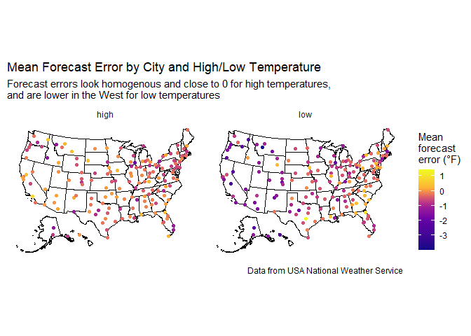

To illustrate some of the functions in the usmap
package, as well as functional programming using the purrr
package, a dataset on weather forecast accuracy from Tidy Tuesday will
be used.
Dataset and data dictionaries
The datasets used in this analysis come from the 12/20/2022 Tidy Tuesday GitHub repository. Weather forecast and observation data was collected from the U.S. National Weather Service by the University of Illinois. This data was cleaned by a team at Saint Louis University and submitted to Tidy Tuesday by Darrin Speegle.
The data dictionary for weather_forecasts.csv can be
found here,
that for cities.csv can be found here.
Question
This analysis aims to answer the question:
- How does high/low forecast accuracy vary, especially spatially?
We’ll use the usmap package to map forecast error in the
US (while including Alaska and Hawaii).
Data Import
First, let’s import the datasets:
# create data folder if it doesn't exist
if (!dir.exists(here("data"))){
dir.create(here("data"))
}
# load datasets if not already in data folder
if (!file.exists(here("data", "raw_weather_forecasts.rda"))) {
raw_weather_forecasts <- readr::read_csv('https://github.com/rfordatascience/tidytuesday/raw/master/data/2022/2022-12-20/weather_forecasts.csv')
raw_cities <- readr::read_csv('https://github.com/rfordatascience/tidytuesday/raw/master/data/2022/2022-12-20/cities.csv')
# save files to rda object
save(raw_weather_forecasts, file = here("data", "raw_weather_forecasts.rda"))
save(raw_cities, file = here("data", "raw_cities.rda"))
}
load(file = here("data", "raw_weather_forecasts.rda"))
load(file = here("data", "raw_cities.rda"))Data Wrangling
While usmap allows the easy mapping of Alaska and Hawaii
(in addition to the contiguous U.S.), it does not (for now) include
Puerto Rico, the U.S. Virgin Islands, and other U.S. territories.
We remove these observations from the dataset, as well as observations with a stated forecast error:
weather_forecasts <- raw_weather_forecasts %>%
drop_na(observed_temp, forecast_temp) %>%
filter(possible_error == "none",
!city %in% c("ST_THOMAS", "SAN_JUAN")) %>%
select(-possible_error) %>%
mutate(forecast_error = forecast_temp - observed_temp)The raw dataset is quite large, so we’ll remove it for now.
rm(raw_weather_forecasts)We also extract coordinate information for mapping, then transform it
using usmap::usmap_transform to allow for convenient
Alaska/Hawaii mapping.
city_coords <- weather_forecasts %>%
distinct(city, state) %>%
inner_join(raw_cities, by = join_by(city, state)) %>%
select(city:lat) %>%
usmap_transform()Data analysis
Descriptive plots
First, let’s see the spread of cities across the US:
# count by state
plot_usmap(color = "grey25") +
geom_point(data = city_coords, mapping = aes(x = x, y = y), color = "red")
Next, let’s look overall at how 12-hour forecast temperatures compare to observed temperatures:
weather_forecasts %>%
filter(forecast_hours_before == 12) %>%
ggplot(mapping = aes(x = forecast_temp, y = observed_temp)) +
geom_point(alpha = 0.05) +
geom_smooth(aes(color = "Line of best fit"), method = "lm", se = FALSE) +
geom_abline(aes(slope = 1, intercept = 0, color = "Observed = expected"), linetype = "dashed") +
theme_classic() +
scale_color_discrete(name = NULL) +
labs(
title = "12-hr Forecast temperatures vs. Observed temperatures",
subtitle = "As expected, forecast temperatures are very close to observed temperatures",
x = "Forecast temperature (°F)",
y = "Observed temperature (°F)",
caption = "Data from USA National Weather Service"
)
#> `geom_smooth()` using formula = 'y ~ x'Mean forecast error over space
First, to calculate mean error:
mean_errors <- weather_forecasts %>%
filter(forecast_hours_before == 12) %>%
group_by(city, state, high_or_low) %>%
nest() %>%
mutate(
mean_error = map_dbl(data, \(x) mean(x$forecast_temp - x$observed_temp))
) %>%
select(-data) %>%
inner_join(city_coords, by = join_by(city, state), relationship = "many-to-one")Then, to map the mean error by city and high/low temperature:
jenks_breaks <- BAMMtools::getJenksBreaks(mean_errors$mean_error, 7) %>%
scales::rescale(to = c(0,1))
plot_usmap() +
geom_point(data = mean_errors, mapping = aes(x, y, color = mean_error)) +
facet_wrap(~high_or_low) +
scale_color_viridis_c(name = "Mean\nforecast\nerror (°F)", option = "C", values = jenks_breaks) +
theme_minimal() +
theme(
axis.line = element_blank(),
axis.title = element_blank(),
axis.text = element_blank(),
panel.grid = element_blank()) +
labs(
title = "Mean Forecast Error by City and High/Low Temperature",
subtitle = "Forecast errors look homogenous and close to 0 for high temperatures,\nand are lower in the West for low temperatures ",
caption = "Data from USA National Weather Service"
)
Summary statistics on forecast error
From the map, it seems that forecast errors for high temperatures are more homogeneous and closer to 0 than forecast errors for low temperatures. To confirm this, let’s see what the quartiles of these two forecast errors are:
mean_errors %>%
split(.$high_or_low) %>%
map(.f = ~summary(.x$mean_error)) %>%
map(.f = ~round(.x, 3))
#> $high
#> Min. 1st Qu. Median Mean 3rd Qu. Max.
#> -1.935 -0.542 -0.258 -0.299 -0.005 0.888
#>
#> $low
#> Min. 1st Qu. Median Mean 3rd Qu. Max.
#> -3.975 -1.000 -0.540 -0.659 -0.239 1.433As expected, the forecast errors for high temperatures are closer to 0 and perhaps vary a bit less than errors for low temperatures.
Summary
This analysis explored the variation of high and low temperature forecast errors in the US.
Forecasted high anf low temperatures are generally very close to observed temperatures, though high temperatures seem to have generally lower errors than low temperatures. Looking spatially, high temperature errors are more homogeneous across the U.S. than low temperature errors, whose forecasts are close to observed temperatures in the Eastern U.S., and generally underestimates in the Western U.S..